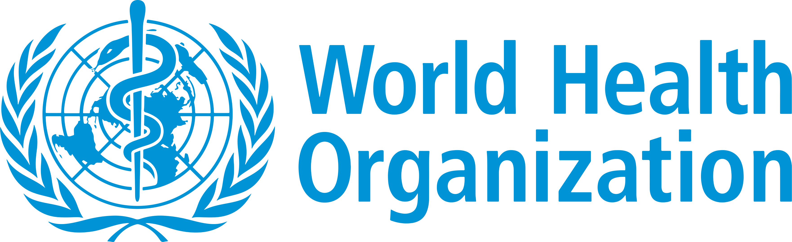

The One Health Approach
The One Health approach is an integrated public health strategy that recognizes the interconnectedness of human health, animal health, and the environment. Diseases affecting animals can spread to humans, while environmental conditions and human activities can influence the health and disease risks of both populations. Addressing these challenges requires collaboration between healthcare professionals, veterinarians, environmental scientists, agricultural industries, and government organizations. One Health is particularly important for managing emerging infectious diseases, antimicrobial resistance, food safety, and other global health concerns.
Implementing The One Health Approach
The One Health approach is implemented through cooperation between organizations and professionals responsible for human, animal, and environmental health. Healthcare providers and veterinarians can share disease surveillance information to identify emerging infections and monitor their spread between populations. Coordinated prevention efforts, such as vaccination programs, livestock testing, food safety regulations, and environmental monitoring, help reduce the risk of disease transmission. International organizations, including the World Health Organization (WHO), Food and Agriculture Organization (FAO), World Organisation for Animal Health (WOAH), and United Nations Environment Programme (UNEP), collaborate to develop strategies for addressing global health threats.
Applying One Health to Tuberculosis
Tuberculosis demonstrates the importance of the One Health approach because the disease affects both human and animal populations, particularly through zoonotic tuberculosis caused by Mycobacterium bovis. Controlling its spread requires human healthcare providers to identify and treat infections while veterinarians monitor livestock and wildlife populations for bovine tuberculosis. Food safety practices, such as milk pasteurization and meat inspection, further reduce the risk of transmission from animals to humans. By coordinating disease surveillance, medical treatment, veterinary services, and agricultural practices, the One Health approach provides a more comprehensive strategy for preventing tuberculosis and protecting public health.
Click here to learn more about The One Health Approach

Tuberculosis Information
Tuberculosis (TB) is an infectious disease caused by bacteria belonging to the Mycobacterium tuberculosis complex. Although the disease primarily affects the lungs, it can spread to other organs, including the brain, kidneys, and bones. TB infections can be classified as latent, in which the immune system keeps the bacteria under control without symptoms or contagiousness, or active, in which the bacteria multiply and cause illness. Despite the availability of effective treatments, tuberculosis remains a major global health concern, particularly in populations with limited access to healthcare.
How Tuberculosis Spreads
Tuberculosis primarily spreads through the air when someone with active pulmonary or laryngeal TB coughs, sneezes, speaks, or sings, releasing bacteria-containing particles that others can inhale. Transmission is more likely when individuals experience prolonged or repeated exposure, particularly in enclosed spaces with poor ventilation. Overcrowded environments such as shelters, correctional facilities, and poorly ventilated workplaces can increase the likelihood of transmission by allowing infectious particles to accumulate. Unlike many infectious diseases, TB is not typically spread through physical contact, sharing food, or touching contaminated surfaces.
Factors that Contribute to Outbreaks
Several socioeconomic and environmental conditions contribute to tuberculosis outbreaks, including poverty, overcrowding, malnutrition, and inadequate access to healthcare. Individuals with weakened immune systems, particularly those with HIV, diabetes, or certain medical conditions, are more likely to develop active TB after becoming infected. Delayed diagnosis and incomplete or inappropriate treatment can allow infections to persist and contribute to the emergence of drug-resistant tuberculosis. Population displacement, migration, and disruptions to healthcare services can further increase transmission by limiting access to testing, treatment, and adequate living conditions.
Zoonotic Tuberculosis
Tuberculosis is not exclusively a human disease, as certain bacteria within the Mycobacterium tuberculosis complex can infect both humans and animals. Zoonotic tuberculosis is commonly associated with Mycobacterium bovis, which primarily affects cattle but can also infect wildlife and humans. People can contract the disease by consuming unpasteurized milk or contaminated dairy products, having direct contact with infected livestock, or inhaling infectious particles in environments where infected animals are present. Bovine tuberculosis also creates economic and ecological challenges through livestock losses, reduced agricultural productivity, and the persistence of infection in wildlife populations.
The Impact of Tuberculosis
Tuberculosis can cause persistent coughing, chest pain, fever, night sweats, fatigue, and unexplained weight loss, with severe infections potentially resulting in permanent organ damage or death. When TB bacteria spread beyond the lungs, they can cause serious complications such as meningitis, kidney damage, and spinal infections. Beyond its effects on individuals, tuberculosis places significant strain on healthcare systems, reduces workforce productivity, and creates financial hardships for affected families and communities. These consequences disproportionately affect vulnerable populations, particularly those experiencing poverty, homelessness, malnutrition, or limited access to medical services.
Preventing and Controlling Tuberculosis
Preventing tuberculosis requires early diagnosis, appropriate antibiotic treatment, and identifying individuals who may have been exposed to infectious cases. Improving indoor ventilation, reducing overcrowding, using appropriate respiratory protection in high-risk environments, and expanding access to healthcare can further reduce transmission. Vaccination with the Bacille Calmette-Guérin (BCG) vaccine helps protect children against severe forms of TB, while pasteurizing dairy products reduces the risk of zoonotic transmission. Controlling tuberculosis also requires veterinary surveillance, livestock testing, wildlife monitoring, and cooperation between human and animal health organizations through the One Health approach.
Sources
World Health Organization - Tuberculosis
U.S. Centers for Disease Control and Prevention - About Tuberculosis
World Organisation for Animal Health - Mammalian Tuberculosis
Data and Charts
Click a country on the map to learn more.